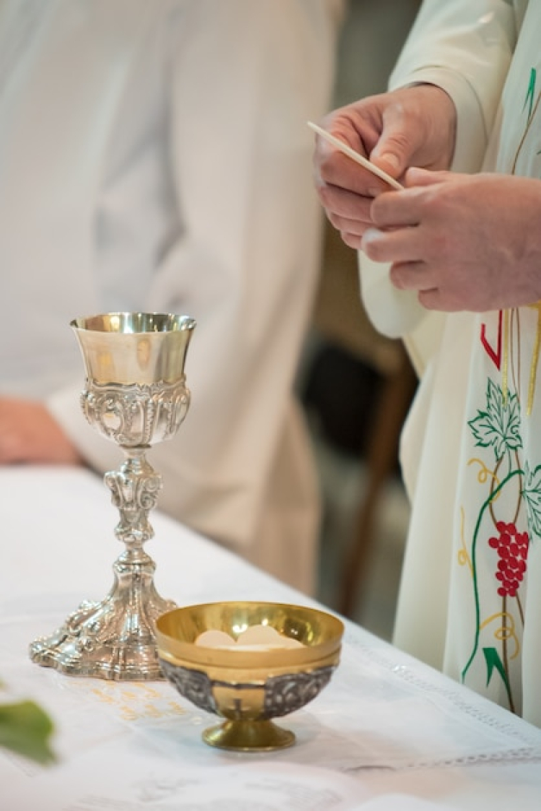

¿Te atreves a descubrir lo que hay detrás?
Adéntrate en Eclessia, un lugar fascinante que te invita a explorar nuevas experiencias. Descubre cómo reservar momentos especiales y conectarte con parroquias de manera única. ¿Qué secretos guarda este espacio? Únete a nosotros y descúbrelo por ti mismo.
